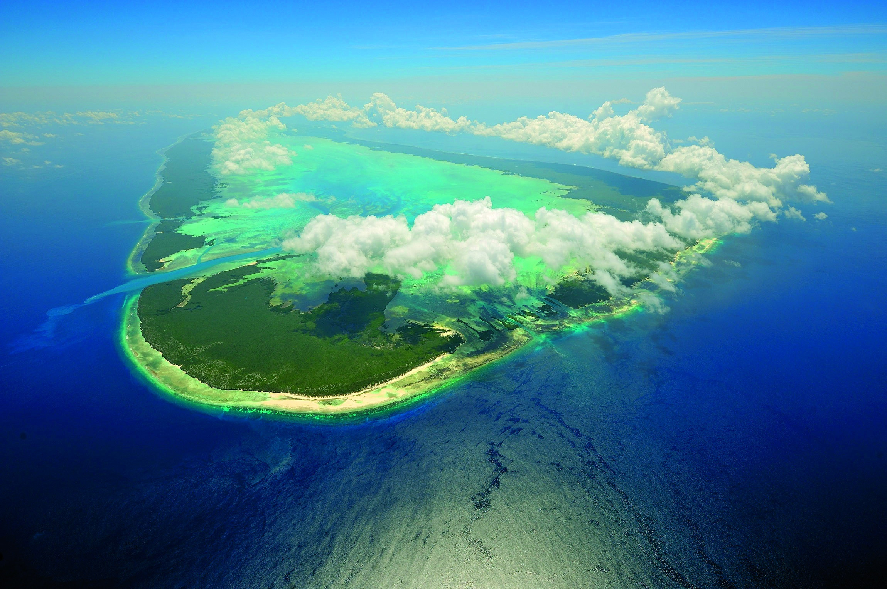
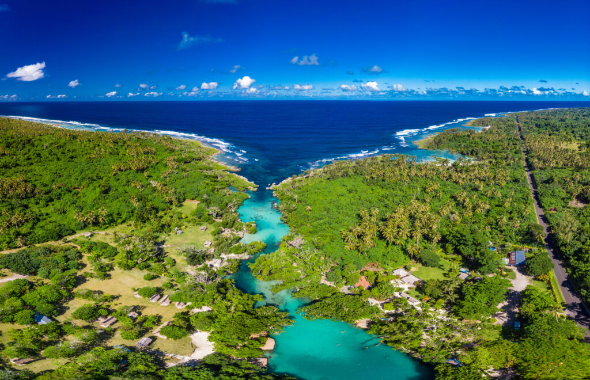

Tuvalu
A small island nation in the Pacific Ocean, Tuvalu has a population of about 11,000 people. Due to extreme rising sea levels and coastal erosion, Tuvalu aims to preserve the island's through detailed scriptures on the Internet before the island sinks completely. The people seek to improve the countries social and health problems as well.

Kiribati
Kiribati is an island with beautiful sunsets, beaches, and waves. But the waves are rising and eroding the land. Kiribati is placed very low to the water- level, and is estimated to be gone by 2100. Kiribati wants to save its country, but such a large effort takes near achievable amounts of money and power.

Vanuatu
Vanuatu is a Pacific island country with many languages and cultures. It attracts divers and snorkelers with its rich marine life. It has 13 main islands and many smaller ones. It is threatened by rising sea levels, which are faster than the global average. It may not survive this century.